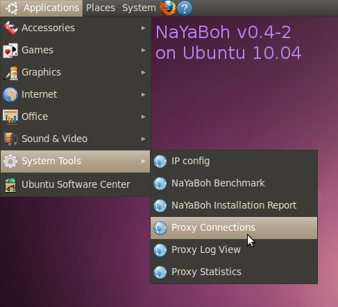

NaYaBoh - Maintenance
Basic functions
This tools are available in the command line for those who
don't have a GUI installed.
nayaboh_benchmark
nayaboh_connections
nayaboh_firewall
nayaboh_installreport
nayaboh_ipconfig
nayaboh_loadconfig
nayaboh_proxylog
A short explanation of this tools:
- Benchmark: Measuring Internet requests and
create a picture in your home. It tries to show you how
effective NaYaBoh is at your place. Just start it to see how it
is used.
- Connections: Listing all the computers
which are using Internet trough NaYaBoh. Takes no
arguments.
- Firewall: Block misbehaving or virus
infected computers from the Internet. Takes no arguments, is
asking options interactive.
- Installation Report: See messages from the
installation process. Takes no arguments.
- IP config: Change the IP of your internal
network. Is asking options interactive. This script is
considered very unstable, use with care.
- Load configuration:
Read values from /etc/nayaboh.conf. Use this only if you know
what you are doing. Also be aware that you need to configure
the network interfaces manually.
- Proxy Log View: Follow live the requests
handled by the proxy. Takes no arguments.
Optional GUI
If you have the GUI package (nayaboh-gui) installed you will
find an entry called "NaYaBoh" in the menu.

GUI for NaYaBoh
With this release, the GUI does not provide the full
functionality.
Attention to users of Debian
Lenny (stable). The gtkperl library seems to be to old, so the
GUI may not run. If you use Debian stable you don't need a GUI
anyways... so no fix for now. (I am happy if you send me a bugfix
for this!)
How does it work?
NaYaBoh is using several techniques to speed up your
internet:
- It caches web content like pictures, style-sheets, etc.
Whenever a page is accessed the second time NaYaBoh will
deliver web-content directly. NaYaBoh is using the squid software to do
this.
- It blocks advertisement and by doing so it prevents
unneccessary downloads. NaYaBoh is using the adzapper software to
achieve this.
- It caches your DNS requests and answers them diectly.
NaYaBoh is using dnsmasq to
do so.
Furthermore NaYaBoh eases network management by providing a
DHCP server. So that all you computers will get their network
configuration (e.g. IP) automatically.


This website is standard
conform.
This website was last updated
for the NaYaBoh 0.4.3 and GUI 0.1 release.